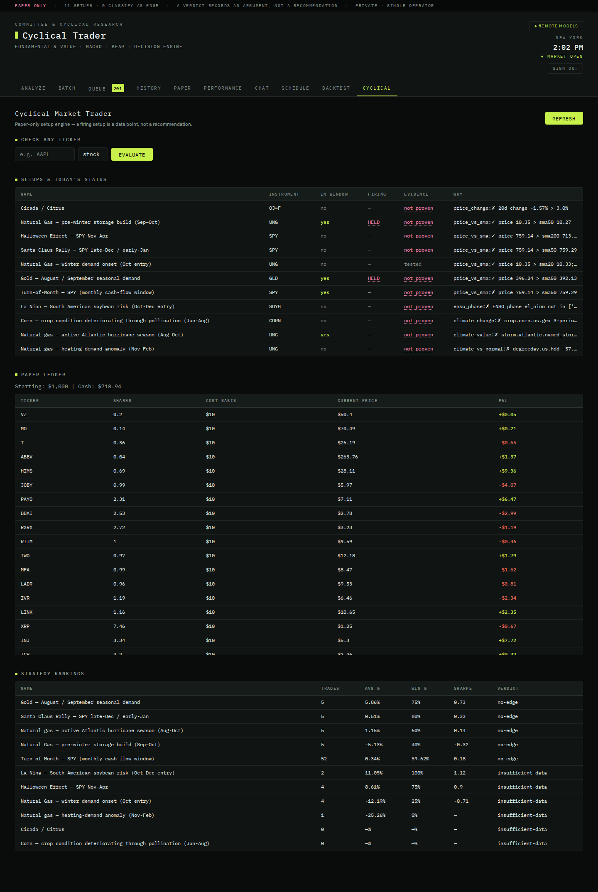
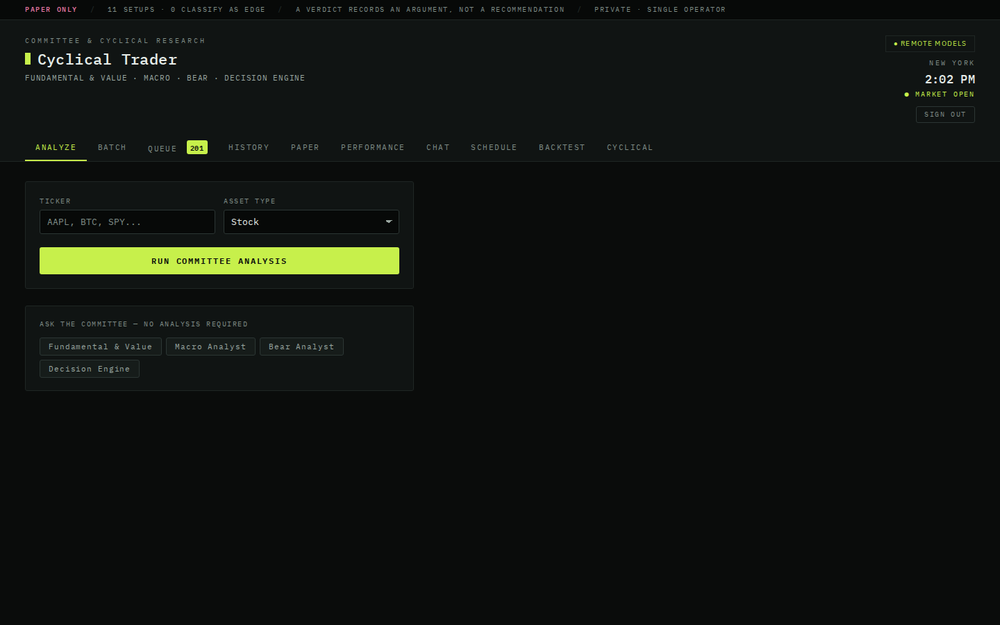

Demo · practice money only
Checks whether price patterns that repeat at the same point in the calendar actually hold up. Practice money only, and still in testing.
Some price moves tend to repeat at the same point in the calendar, each month or each year. Each row is one pattern: whether it is in season today, and whether the evidence holds up.

